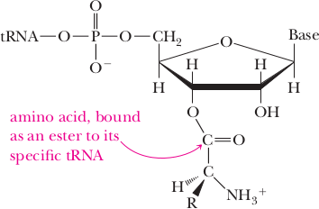

Translation
Translation is the process o synthesizing proteins in ribosomes according to the nucleotide sequence o mRNA.
There are 20 dif erent amino acids that are incorporated into proteins, and their sequence is encoded in mRNA as codons that consist o three nucleotides. Since there are our dif erent bases, 3-nucleotide codons can have a total o 43 = 64 diferent sequences, enough to encode 20 amino acids (2-nucleotide codons would of er only 42 = 16 options). The genetic code is a list o codon sequences and the corresponding amino acids that are used in translation (able 7.1). T e AUG codon codes or Met and signals the start o translation. T e codons UAA, UAG, and UGA are stop codons (nonsense codons, termination codons) and usually end translation.
Since all possible codon sequences are used, multiple different codons may code or the same amino acid; that is, the genetic code is degenerate.
The coding strand o DNA has the same sequence as the mRNA that is generated rom the template strand, except that
it contains in place o U. Both the coding strand and the mRNA are complementary to the template strand.
Ribosomes are cytoplasmic organelles with a large and a small subunit (Figure 9.7) ticles that aid in the production of and are the site of polypeptide synthesis. Ribosomes can float in the cytoplasm or attach proteins. to the outer membrane of the rough endoplasmic reticulum (RER). Each ribosome subunit contains proteins and a type of RNA called ribosomal molecules that form part of the RNA (rRNA). During translation, the rRNA in the large subunit acts as an enzyme, ribosome. linking amino acids together to form a polypeptide.
tRNAs
The tRNAs, (Transfer RNA) are structural RNA molecules that were transcribed from genes by RNA polymerase III (in the nucleoplasm). Depending on the species, 40 to 60 types of tRNAs exist in the cytoplasm. Serving as adaptors, specific tRNAs bind to sequences on the mRNA template and add the corresponding amino acid to the polypeptide chain. Therefore, tRNAs are the molecules that actually "translate" the language of RNA into the language of proteins.
Each tRNA molecule has two attachment sites: binding site for a specific type of (1) a nucleotide sequence of three nucleotides called an anticodon that pairs with a amino acid and has a three-base complementary codon sequence in mRNA, and (2) a site for attachment of the amino acid segment known as an anticodon specified by the mRNA codon. As we will see in the following section, tRNAs deliver their that recognizes a specific base attached amino acids to the ribosome in the order specified by mRNA codons. Once at Sequence in messenger RNA. the ribosome, the amino acids are linked together by rRNA to form a polypeptide chain.
Aminoacyl tRNA Synthetases
The process of pre-tRNA synthesis by RNA polymerase III only creates the RNA portion of the adaptor molecule. The corresponding amino acid must be added later, once the tRNA is processed and exported to the cytoplasm. Through the process of tRNA "charging", each tRNA molecule is linked to an amino acid that corresponds to the anticodon, by a group of enzimes called aminoacyl tRNA synthetases. At least one type of aminoacyl tRNA synthetase exists for each of the 20 amino acids; the exact number of aminoacyl tRNA synthetases varies by species. These enzymes first bind and hydrolize ATP to catalyze a high-energy bond between an amino acid and adenosine monophospate (AMP); a pyrophospate molecule is expelled in this reaction. The activated amino acid is the transferred to the tRNA, and AMP is released. Each amynoacyl synthetase recognizes the RNA sequence at the anticond, together with other features of the tRNA sequence and structure, and attaches the appropriate amino acid to the 3' end of the tRNA. Thus, for example if the anticodon had the sequence 5'-CCU-3', an aminoacyl synthetase attaches the amino acid arginine to the 3' end of the molecule.
Translation, like transcription, has three steps: initiation, elongation, and termination:
Initiation begins when mRNA binds toa small ribosomal subunit and the anticodon of the initiator tRNA carrying the amino acid methionine pairs with the AUG codon of mRNA (Figure 9.9a). Because AUG is the start codon and also encodes methionine, this amino acid is inserted first in all human proteins. Initiation is complete when a large ribosomal subunit binds to the complex (Figure 9.9b).
During elongation, amino acids are added to the growing polypeptide chain. Recall that during initiation, the initiator (RNA carrying methionine is added to Initiation complex Formed by the the initiation complex, so each polypeptide chain begins with methionine. As combination of mRNA. tRNA. and elongation begins, a tRNA carrying the second amino acid (in this case, valine) the small ribosome subunit. The pairs with the second mRNA codon, and the rRNA of the large subunit acts as an first step in translation. enzyme and forms a peptide bond between the two amino acids. As the ribosome Peptide bond A covalent chemical moves along the mRNA, other tRNAs carrying amino acids pair with mRNA link between the carboxyl group codons, adding amino acids to the growing polypeptide chain (Figure 9.9c-e). of one amino acid and the amino.
Termination occurs when the ribosome reaches a stop codon. Recall that three group of another amino acid. codons (UAA, UAG, and UGA) do not code for amino acids, and there are no tRNA molecules with anticodons for stop codons. Proteins called release factors bind to stop codons; then the polypeptide, mRNA, and tRNA are released from the ribosome.